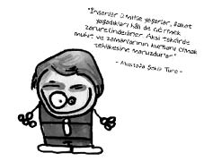

Mustafa Şekip Tunç (1886-1958)
Türkiye’de çağdaş psikolojinin kurucusu sayılır. Bergsoncu felsefeyi savunmuştur. İstanbul Darülfünun’da psikoloji dersleri vermiştir. Resimle de ilgilenmiş, yapıtlarını sergilemiştir. Geçirdiği kalp rahatsızlığı sonucu ölmüştür.
Kitapları: Ruhiyat Dersleri, Yeni Türk Kadını, Üç Zihniyet ve İnsan Ruhu Üzerinde Gezintiler
